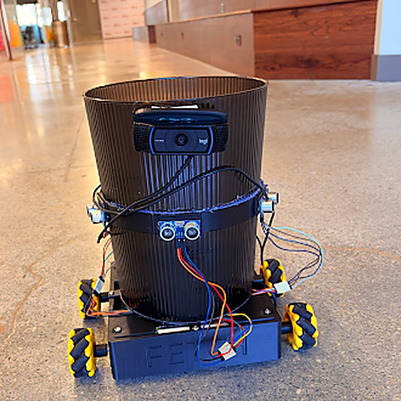
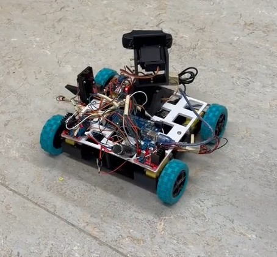

Leland High School Science FairMagLift · 30+ submissions
Fetch
Co-founder · hardware lead · CSI Hacks

A trash can that drives itself to whoever calls it, finding its way with AprilTags instead of lidar. Built in about 8 hours; I did the CAD, electronics and hardware.
Co-founder · hardware lead · Berkeley Robotics Hackathon

An affordable crop-scouting robot that spots diseased leaves with a VLM we trained, and probes the soil with a rack-and-pinion arm. Built in about 7 hours; I did the hardware.
A 4-bar linkage arm with a three-finger helical-gear gripper. When the elbow couldn't hold the load, I reworked the joint geometry instead of buying a bigger servo.